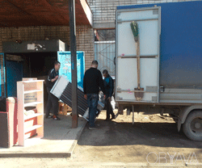
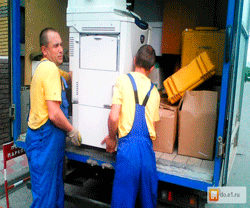
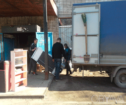
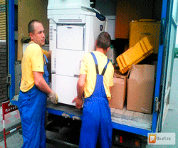

Услуги грузчиков
Грузчики быстро и аккуратно помогут при: перезде, разгрузке фур или контейнеров. Также есть возможность воспользоваться услугами подсобных рабочих, которые помогут с уборкой приусадебной территории, вывезти мусор или выполнить ремонтно-строительные работы (покраску, демонтаж, укладку покрытий и т.д.). Если вам нужны подсобники на стройку звоните по телефонам, указаным на сайте и мы оперативно поможем вам!!!
 



| Тип работ | Цены | Примечание |
|---|---|---|
| Наличный расчет | от 8 руб./час (за одного грузчика) | Минимальный заказ 2 часа |
| Безналичный расчет | от 10 руб./час (за одного грузчика) | Минимальный заказ 3 часа |
| Подъем, спуск строительных материалов, мусора | 35 коп. до 30 кг веса за 1 этаж; 50 коп. до 50 кг веса за 1 этаж | Сделка / Минимальный заказ 16 руб. |
| Подъем, спуск гипсокартона, листов ДВП, листов ДСП и др. предметов | 50 коп. пронос 1 листа за 1 этаж | Сделка / Минимальный заказ 16 руб. |